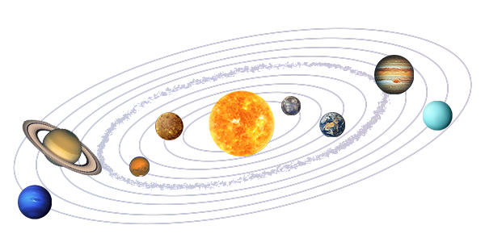
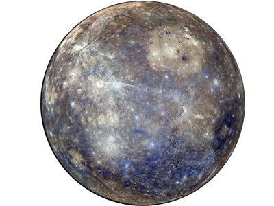
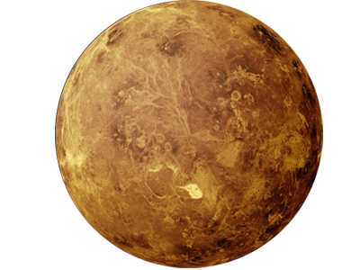
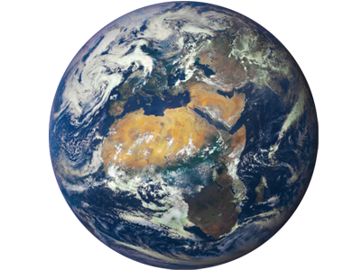
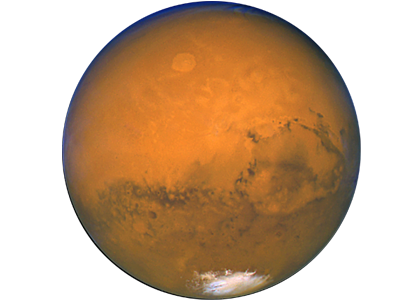
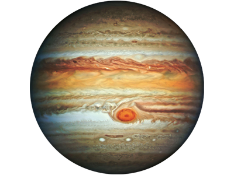
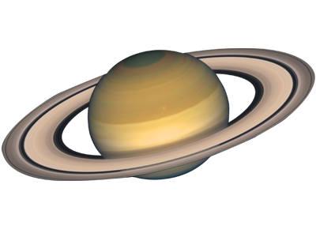
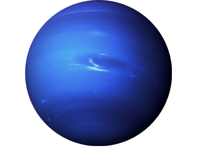

太阳系是由太阳、行星及其卫星、小行星、彗星、流星和行星际物质构成的天体系统，太阳是太阳系的中心。
在庞大的太阳系家族中，太阳的质量占太阳系总质量的99.8%，八大行星以及数以万计的小行星所占比例微乎其微。
它们沿着自己的轨道万古不息地绕太阳运转着。太阳无私地奉献出自己的光和热，温暖着太阳系中的每一个成员。
水星距离太阳最近，是太阳系中体积和质量最小的行星。
常和太阳同时出没。水星的直径只有4880公里，比木卫三和土卫六还要小。
由于水星太靠近太阳，以致于哈勃望远镜无法对它进行安全的摄像。现仅有水手10号探测器于1973年和1974年三次造访水星。它仅仅勘测了水星表面的45%。
金星距离太阳第二近，太阳系中第六大行星，太阳系中温度最高的行星。
由于金星的表面有极其浓厚的大气层，而且绝大部分是二氧化碳，将热量束缚在地表，无法散去，导致金星表面温度甚至可以高达500℃。
第一艘访问金星的飞行器是1962年的水手2号。随后，它又陆续被其他飞行器：金星先锋号，苏联尊严7号、尊严9号访问。
地球距离太阳第三近，也是太阳系第五大行星。
地球的平均密度是每立方米5.5吨，是太阳系密度最大的行星。
地球的天然卫星是月球，也是地球仅有的天然卫星。月球是最明显的天然卫星的例子。在太阳系里，除水星和金星外，其他行星都有天然卫星。
火星是离太阳第四远的行星，太阳系中第七大行星。
它的温度和地球类似，有水的痕迹，非常接近地球，这都让科学家致力于将它改造成第二个地球。
第一次对火星的探测是由水手4号飞行器在1965年进行的。人们接连又作了几次尝试，包括1976年的两艘海盗号飞行器。此后，经过长达20年的间隙，在1997年的7月4日，火星探路者号终于成功地登上火星。
木星是离太阳第五远的行星，太阳系中第一大行星。
木星的直径为14.3万公里，是地球的11.2倍。它的质量是地球的318倍，也是太阳系内除太阳以外所有天体总和的2.5倍。
木星在1973年被先锋10号首次拜访，后来又陆续被先锋11号，旅行者1号，旅行者2号、尤里西斯号和伽利略号探访。“朱诺号”探测器2016年7月进入木星轨道。
土星是离太阳第六远的行星，太阳系中的第二大的行星，
土星的体积是地球的830倍，质量却只有地球的95倍，可以发现，它的密度比水还小。
先锋11号在1979年首先去过土星周围，同年又被旅行家1号和2号访问。卡西尼飞行器也在2004年到达土星。
天王星是离太阳第七远的行星，太阳系中的第三大行星
1781年，英国天文学家赫歇尔第一次利用望远镜看到了天王星。
只有一艘星际探测器曾到过天王星，那是在1986年1月24日由旅行者2号完成的。
海王星是离太阳最远的行星，太阳系中的第四大行星
海王星最远时距离太阳45.54亿公里，是地球的30倍。由于太过于遥远，它也是太阳系最暗的行星、最冷的行星、公转速度最慢的行星、公转周期最长的行星。
仅有一艘宇宙飞船旅行者2号于1989年8月25日造访过海王星。几乎我们所知的全部关于海王星的信息来自这次短暂的会面。
